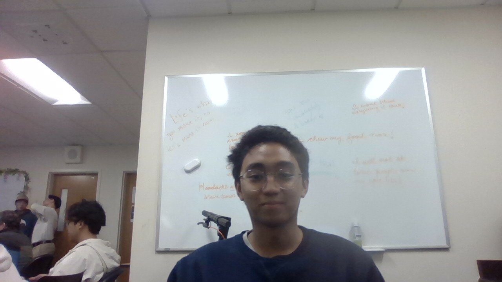

Matthew Dacanay 650-303-1440
| matthewdacanay@aol.com | www.linkedin.com/in/matthewdacanay | github.com/matthewaol Education Skyline College San Bruno, Computer Engineering, GPA: 3.9 Expected May 2024 • Activities & Societies: Engineering and Tech Scholars, Promise Scholars, Phi Theta Kappa Experience Peer Instruction Leader Aug 2022 - Present Skyline College San Bruno, CA • Tutored students in Computer Science, Physics and Math with a large variety of techniques to reinforce students’ understanding of tough concepts. • Worked closely with professors to provide feedback on teaching and formulated methods to help students succeed. • Coordinated with other tutors to create and facilitate multiple academic excellence workshops over the semester. Research Scholars Intern Jan 2023 Skyline College San Bruno, CA • Utilized and engineered Infrared Sensors with Arduinos and Transceivers to track statistics on student traffic within spaces of the campus. • Implemented Python Scripts to extract relevant data onto a computer where the data can be converted into a meaningful heatmap. Physics and Electronics Lab Technician March 2023 - Present Skyline College San Bruno, CA • Conducted demonstrations and supervised users in the proper use of electronics tools, ensuring safety protocols and efficient equipment operation. • Collaborated with faculty to organize and set up physics lab setups, ensuring they met the standards for specific experiments. Research Intern June 19 2023 - August 25 2023 SLAC National Laboratory Palo Alto, CA • Completed project with the Macromolecular Crystallography group at the Stanford Synchotron Radiation Lightsource, funded by the DOE under the Community College Internships (CCI) program. • Created a program that simulates realistic X-ray diffraction data for use in developing a machine-learning Bragg-peak finder. • Utilized Python, the Computational Crystallography Toolbox, and a GPU kernel written in OpenCL to produce 100,000 images with multiple degrees of variability such as protein structures, random orientations, and solvent content.
Community & Leadership President Oct 2022 – August 2023 Computer Science Club San Bruno, CA • Presided and organized weekly meetings that received consistent attendance from students and advisors to discuss upcoming events and opportunities, as well as member feedback for requested activity ideas or workshop topics. • Managed a GitHub organization to streamline the work of the following projects: Dungeon Crawler, Data Dashboard displaying student success at Skyline, and Informational Club Website. • Moderated and arranged entry-level workshops to teach members a variety of relevant skills needed in the tech industry. Utilized slideshow presentations, coding demonstrations, and hands-on activities to engage members in learning. Vice President March 2023 - Present Physics and Astronomy Club San Bruno, CA • Assisted in the planning of a road trip to Nevada to view Annular Solar Eclipse, which was live-streamed to community. • Gained proficiency in telescope assembly and operation, ensuring a smooth viewing experience for members. Skills
Technical Skills: C++, Python, Java, MATLAB, Arduino, SQL, Linux, Excel, Git, Bash, Soldering Soft Skills: Problem-solving, Collaboration, Public Speaking, Open Minded